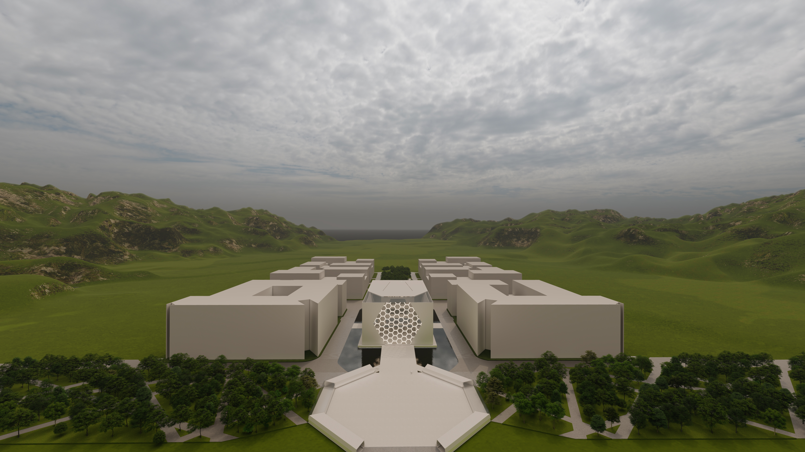

CONTEXT
Area: 7,997 m²
Users: Workers, Tourists
Land zone: Commercial, Institutional
Location: Wenzhou, China
Primary Research
The site research started with Wenzhou cultural and architectural analysis. In terms of culture, Wenzhou has been a foreign treaty port in the 70s, mountainous and isolated from the rest of China. Wenzhou's local culture is also distinct from other cities in China, even the spoken dialect is one of the hardest to recognize. There has been great emigration to EU and U.S, Italy being one of the Wenzhou people a most favourite place to live in the EU, with an approximate 90% of all Chinese in EU residing there. Wenzhou is considered as a best Feng Shui city due to its condition and nature. Fengshui smart development made all of the militant activities unsuccessful. Wenzhou is considered as an Alumite Capital of the world.

Alumite and Fengshui
The concept development focused on Wenzhou alumite stone and implementing Fengshui for the whole museum. The optimal entrances/views are those that are not blocked by mountains but are open to the open space and in this case, it is the East China Sea. Therefore optimal entrances for this project are north and south-east ones. Another important aspect to consider was symmetry. To achieve that the museum was subdivided into sections. Each of the 4 floors of the museum is set with its energy. The 1st floor requires a free energy flow from the entrance to the exit and the functions are hallway and gift shop, holographic visualisations, VR experience and exit zone is coupled with Coffee spaces and WCs. The second floor contains a robotics technological advance, placed in wall intrusions as seen in Italian architecture. The central area contains glass boxes with the showcase of the most important advances. The third floor contains Emergency Robotics with obstacle tests that are shown to visitors. The fourth floor is an office laboratory space where technical construction and programming is occurring.